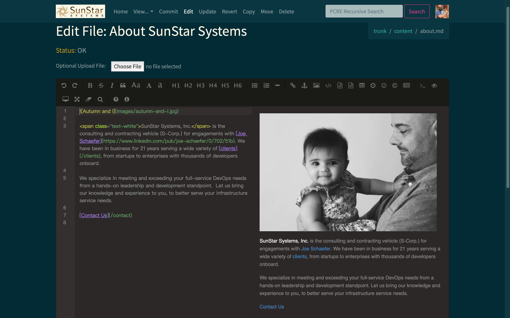
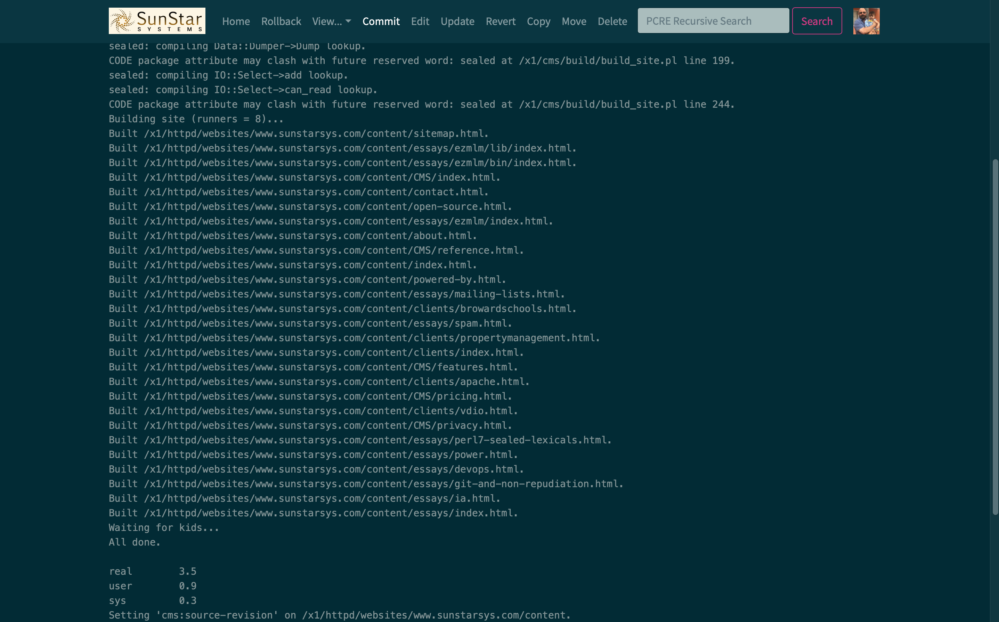
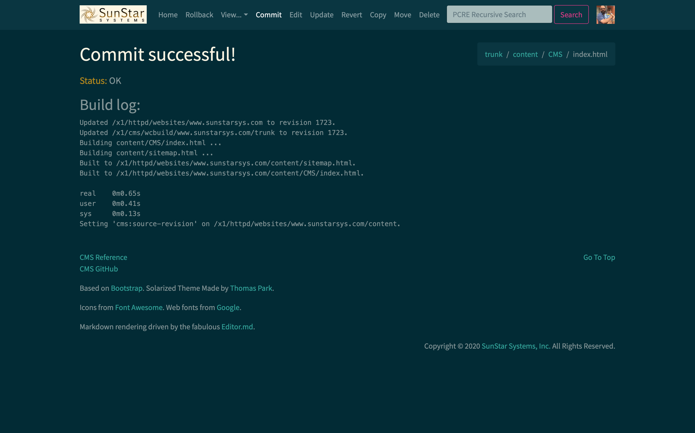

## SunStar Systems CMS
The Original Markdown JAM Stack.™
The SunStar Systems CMS is an
- online,
- flexible,
- cost-effective,
- convenient, and
- peak performance
IDE for developing and maintaining static website content, potentially with some basic [CGI](https://en.wikipedia.org/wiki/Common_Gateway_Interface)/[SSI](https://en.wikipedia.org/wiki/Server_Side_Includes) features.
### Here's the Pitch, IT Decision Maker...
What differentiates this product from our competitors is the [CMS Technology](technology), and how it allows us to maintain very low operating costs while providing a superior service. We pass the cost savings on to our **customers**, instead of our C-Suite executives. [Give us a call](/contact), **especially** if you are an IT government sector decision-maker, or really anyone dissatisfied with the cost structure of anything else out there, including free offerings bogging down your staff's time and energy. It's time for a sea change in how you manage and deliver your site to your target audience.
The switching costs are trivial in most circumstances: our default file layout and processing logic matches up well with any other static site generator. Our extensive experience migrating sites both on to, and off of, the forerunner of this system at The Apache Software Foundation lets us say with conviction: there is no substantial vendor lock-in involved with our offering. But the real win is when you realize you have limitless control over which personnel have editorial rights to each resource in **your own** Subversion repository, and that you never need to perform the cost-benefit-analysis on your editorial changes (or *even your editor previews* with certain cloud-based products) that our competition expects of you, as you work on your own site in your own fashion. Even your [dynamic content](reference#h2-dynamic-content) is built according to your needs and schedule, not ours. Go at your own pace, use as many employees/previews/edits/commits/branches as you like, and only pay for what you *actually use* on our infrastructure.
### Here's Why, Full Stack Developer / Content Author / DevOps Guru...
If you are tired of the per-seat licensing and per-CPU-cycle choices weighing you down whenever you need to fix a typo, [join us](/contact). If you are a regex-equipped lion tamer for decades of accumulated legacy HTML content, or really anyone dissatisfied with the other options on the market and how they function at scale. You are *really* going to like this system in action, every single day.
Multi-gigabyte source trees are simply no match for it — full site build durations are measured in *seconds*, not hours and minutes. The system easily sustains over `100 MB/s` for full site builds, but given its unique dependency management functionality, it almost never needs to resort to them:
It only builds what you need built.™
This technology was first invented in late 2011 by members of the Apache Infrastructure Team. The phrase "[JAM Stack](https://jamstack.wtf)" was coined years later, by a group unaware of our prior art in this space. But the [public record](http://web.archive.org/web/20120112045033/http://www.apache.org/dev/cms) is crystal clear, and this new offering by SunStar Systems is testimony to that original legacy and its true open source origins.
### Back to the Product...
It does all this by either interfacing with an [svnpubsub](https://svn.apache.org/repos/asf/subversion/trunk/tools/server-side/svnpubsub/)-enabled, customer hosted Subversion service, or by using one of ours. It automatically builds each committed change using a lightning fast `node.js` + `Perl v5.30.2` (the stable forerunner of [Perl 7](https://www.perl.com/article/announcing-perl-7/)) build system based on the [Hollywood principle](https://deviq.com/hollywood-principle/): it calls out to customer-supplied Perl modules to do whatever the customer needs done (don't worry, there are basic layout templates available that will do all the heavy lifting for you). It also goes the extra mile and instantly distributes the change-sets for the build, atomically, to your live website servers / CDN providers.
[REST compliance](https://www.codecademy.com/articles/what-is-rest) has its benefits to CMS users. They'll like the fact that their browser's Back button doesn't break the service; in fact it's an essential component of the Rollback functionality. In an emergency site breakage situation, going back to the bad Commit submission's result page will provide them with the ability to reverse merge that errant applied change — at the click of a button — and rebuild the site back to a known good state.
We provide a basic Django based template system derived from a customized `Dotiac::DTL` module from CPAN, but can provide any other Perl-based template system. The Apache 2.0 Licensed [CMS build system](https://github.com/joesuf4/cms), together with a large collection of supporting modules to take advantage of within that tree, is available on GitHub.
**SPECIAL OFFER:** first month of service is FREE! See the full CMS Pricing details.
{% endfilter %}
{{ content|markdown }}
A Few Representative Screen Shots:
IDE View with Farsi (UTF-8).
IDE Editor View.

IDE Full Site Build.

IDE Typical Site Build.

IDE Search (those links in hot pink will drop you directly into an editor screen, with the cursor placed exactly according to the matching text).